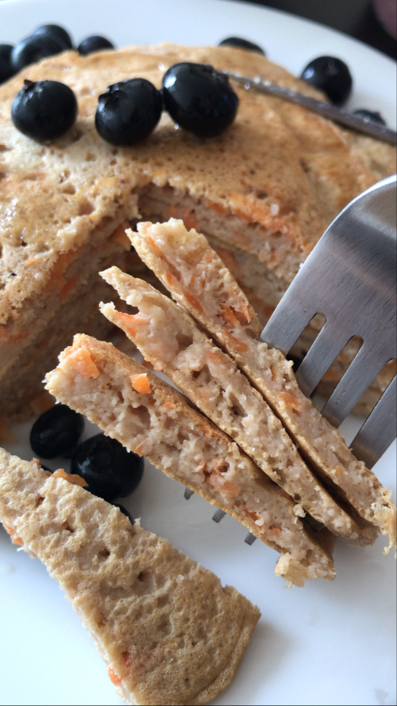

Healthy Carrot Pancakes

Imagine to start your day with a sweet breakfast and yet nutritious....hard to believe??
Well...with this recipe I will show that it is posible! You will think that you are eating a mini carrot cake as a breakfast
And I'm sure these pancakes will become your favorites, so I won't miss more time talking / writing and let's cook!
Ingredients:
- 1/2 cup oats
- 1 teaspoon baking powder
- 1 teaspoon ground cinnamon
- 1 measure powdered stevia
- 1/4 cup shredded carrot
- 1 egg
- 1/4 cup unsweetened almond milk or water
- 1 teaspoon vanilla extract
- coconut or canola oil for cooking
Directions:
- Put all ingredients (beside carrots) to a blender and blend on high for 30 seconds or until completely smooth.
- Add the carrots, stir (DO NOT BLEND) everything with a spoon and set batter aside to rest for 5 minutes.
- Heat a light coat of coconut or canola oil in a nonstick skillet over medium heat.
- Stir the batter again with the spoon and drop 2 tablespoons of the batter for each pancake into the skillet.
Depending of the size of your skillet you can put 3 or 4 pancakes at the same time.
- Cook until panckes slightly puff up and you see a few bubbles along the edges, 2-4 minutes.
- Flip pancakes until golden brown on underside. If you find that pancakes are browning too quickly,
then you need to lower the heat.
- Once they are cooked, put pancakes in a plate with a cloth or absorbent paper.
- Repeat with more oil and remaining batter. Makes 5 to 6 pancakes total.
- Now its time to serve them with your favorites toppings like blueberrys, greek yogurt or sugar free syrop!
As you can see this is a easy recipe to make and share with your loved ones. If you do, don't be shy,
posted on IG and tag me ;) my user is @luzmasmeals
See you soon!
Back to home